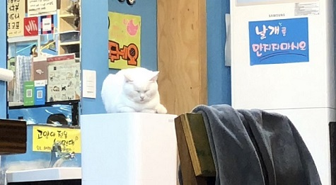

I am currently a New Media Certificate student. I hope that over the course of taking this class, I will be able to gain a better understanding and more experience with creating websites that I can apply in new classes, jobs, or projects.
In this brief journey, I'll take you through some of my favorite moments from my short-live trip in Seoul, South Korea back in February/March of 2020.
In of the process of building the 3-page website for Project One, I have definitely encounter multiple obstacles. Howvever, I was able to learn so many new ways to create and style a website that I previously would not have known. It was very cool to have learn how to use CSS style to add a variety of web design elements to the website (such as font-family, font-color, border-radius, etc...). One of my favorite element from this project was creating the navigation bar at the top of the page. This was also were I believe I struggled the most during the process of creating this website. It was a difficult learning process to figure out how to make sure that the button properly link to the page I need it to go to, format everything so that each button/section is properly positioned to my preference but also to make sure the color of the font and the background of the button works depending on how the users interact with it. For example, during the beginning of my Project One making process, the options in the navigation did not lead to the intended page and displayed an error screen instead and during some attempts to fix this, they became unclickable. After a few tries at redoing the code, I was able to get it working again. However, at the moment, even though it is not perfect, I really like how it turned out.
For the qualitative elements of project one, I decided to link some of my favorite fonts into the website which included Pacifico, Nanum Pen Script, and Nanum Gothic. I also attempted to test out several different color scheme that I could use for the background, fonts, and the navigation bar (in which I learned how to apply a gradient of blue and pink). As for CSS techniques, I mostly struggled with this part when I was coding for the navigation bar. There were several instances when the buttons would be aligned on top of one another rather than horizontally on top of the page or hovering on one button would lead an adjacent button to also react to that interaction. Another instance, that I remember frustrates me the most was when the buttons had a border (of a different color) around it when I hover over it. Eventually, I discovered that this happened due to another CSS element that I had included in another section of the CSS code and was able to solve that problem after looking back through the code. I also attempted to add an animated button (for the link to project one) in the homepage. There were multiple trial and error to get the button to move as smoothly as possible but also visibly on the screen (because it kept moving off screen during th first few attempts). For future projects, I would like to learn more extensively about differents ways to style a website, how to make animations appear more smoothly, how to align the p and img elements (to appear more contained in an appealing way), but also reach a better understanding of how to link different pages. Even though I listed these few examples, I believe that there is always something new to learn.
Below is a sample image of one of the pages from the project:
